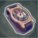
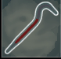
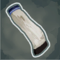
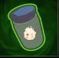
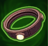
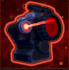
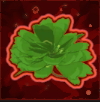

Accurized Rounds
Accurized Rounds erhöhen den Bosschaden um 20% pro Stapel.
Ideal für jeden Run und ist grundsätzlich ein musthave.

Lens Makers
Die Lens-Maker's Glasses in Risk of Rain erhöhen die kritische Trefferchance um 10 % pro Stapel.
Mit zehn Stapeln erreicht man 100 % kritische Trefferchance und trifft somit bei jedem Angriff kritisch, was den Schaden effektiv verdoppelt.

Delicate Watch
Delicate Watch in Risk of Rain 2 erhöht den Schaden um 20 %, solange der Spieler über 25 % Leben hat.
Sie ist allerdings zerbrechlich, fällt die Gesundheit unter 25 %, zerbricht die Uhr und der Bonus geht dauerhaft verloren.

Crowbar
Die Crowbar in Risk of Rain 2 erhöht den Schaden gegen Gegner mit mehr als 90% Leben.
Jeder Stapel steigert diesen Bonus weiter, was die Brechstange besonders effektiv für starke Eröffnungsangriffe macht, um Gegner schnell zu schwächen.

Paul's Goat Hoof
Paul's Goat Hoof erhöht die Geschwindigkeit um 14% pro Stapel.
Grundsätzlich wichtig für jeden Run, damit man nicht permanent von Gegner getroffen wird.

Will-o'-the-Wisp
Der Will-o'-the-Wisp verursacht bei besiegten Gegnern eine Explosion, die nahen Feinden Schaden zufügt.
Mit jedem Stapel vergrössert sich der Explosionsradius, ideal für den Kampf gegen Gruppen.

Kjaro's Band
Treffer die mehr als 400% Schaden verursachen, schaden Gegnern zusätzlich mit einem Runenflammen-Tornade, der 300% (+300% pro Stapel) Gesamtschaden über Zeit verursacht. Lädt sich alle 10 Sekunden wieder auf.
Unentbehrlich für Proc-Chains da das Band ein Proccoefficient hat und extrem viel Schaden macht.
Salestar
Erhalte einen zusätzlichen Gegenstand in der ersten geöffneten Kiste pro Ebene. Jeder zusätzlicher Salestar erhöht die Chance auf weitere Gegenstände um 5%-
Sehr angenehmer Gegenstand, vorallem wenn man eine Kiste mit garantiert roten Items findet.

Laser Scope
Kritische Treffer verursachen zusätzlich 100% Schaden(+100% pro Stapel).
Grundsätzlich sobald man 100% Krit Chance hat ist dieses Item ein muss.

57-Leaf Clover
Alle zufälligen Effekte werden +1 (+1 pro Stapel) Mal für ein günstiges Ergebnis ausgewürfelt.
Einfach gesagt: Macht deine Proc-Chains länger.